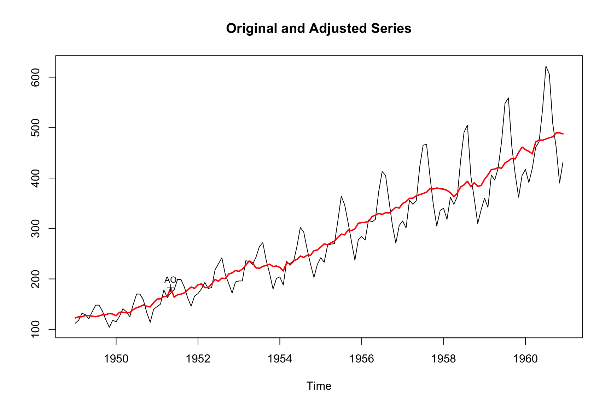

2 Getting started
2.1 Installation
If you use R, installing X-13ARIMA-SEATS from CRAN is as easy as installing any other R package (Sax and Eddelbuettel 2018):
install.packages("seasonal")2.2 A minimal example
Once the package is installed, you can load it in the usual way:
The seas() function provides the core functionality of the package. By default, seas calls the automatic procedures of X-13 to perform a seasonal adjustment that works well in most circumstances:
seas(AirPassengers)
#>
#> Call:
#> seas(x = AirPassengers)
#>
#> Coefficients:
#> Weekday Easter[1] AO1951.May MA-Nonseasonal-01
#> -0.00295 0.01777 0.10016 0.11562
#> MA-Seasonal-12
#> 0.49736The first argument of seas is a time series of class ts. ts objects are frequently used in base R and are useful to store monthly, quarterly, or annual data. We restrict our attention to monthly and quarterly series. This is done for two reasons; first is these are the main frequencies handled by X-13, second, this sampling frequency make conceptual understanding of statistical methods, such as linear filters, easier to grasp. The AirPassengers example series is included in base R and shows monthly totals of international airline passengers from 1949 to 1960. seas() returns a seas object that contains the necessary information on the adjustment performed on this time series; we can assign it to a variable:
m <- seas(AirPassengers)There are several functions and methods for "seas" objects. The final function returns the adjusted series. The plot method shows a plot with the unadjusted and the adjusted series.
plot(m)
As you can see, the adjusted series is much less volatile than the original one because the seasonal component was removed from the original series. But the adjusted series is not entirely smooth. This is because it still contains the irregular component.
This constitutes a crucial point about seasonal adjustment: It only removes regular, predictable movements, not irregular ones. In the adjusted series, we can see a decrease in airline passengers in 1953 and between 1957 and 1958. These decreases were difficult to discover in the original series.
The summary method displays an overview of the model, very similar to the one produced by other R classes (eg lm or numeric):
summary(m)
#>
#> Call:
#> seas(x = AirPassengers)
#>
#> Coefficients:
#> Estimate Std. Error z value Pr(>|z|)
#> Weekday -0.0029497 0.0005232 -5.638 1.72e-08 ***
#> Easter[1] 0.0177674 0.0071580 2.482 0.0131 *
#> AO1951.May 0.1001558 0.0204387 4.900 9.57e-07 ***
#> MA-Nonseasonal-01 0.1156204 0.0858588 1.347 0.1781
#> MA-Seasonal-12 0.4973600 0.0774677 6.420 1.36e-10 ***
#> ---
#> Signif. codes: 0 '***' 0.001 '**' 0.01 '*' 0.05 '.' 0.1 ' ' 1
#>
#> SEATS adj. ARIMA: (0 1 1)(0 1 1) Obs.: 144 Transform: log
#> AICc: 947.3, BIC: 963.9 QS (no seasonality in final): 0
#> Box-Ljung (no autocorr.): 26.65 Shapiro (normality): 0.9908The summary gives an overview of the adjustment model and provides diagnostics. This book will help you do understand it in more detail. The following section discusses some of the elements and relates them to the chapters in this book.
2.3 Where to go from here
seas(AirPassengers) produces a good seasonal adjustment of the airline passengers time series. If you are very new to seasonal adjustment, the automated routines of X-13 and seasonal produce an adjustment that works well in most circumstances.
The command seas(AirPassengers) has invoked a large number of specs of X-13. spec is X-13 slang for a module within the software. X-13 is built on top of twenty specs that perform various subtasks of seasonal adjustment. Some specs are required most of the time (e.g., regression), while others are optional (e.g., seats) or purely technical (e.g., spans shortens the time series in use). Chapter 3 discusses the available specs in more detail.
This book teaches you how to use and fine-tune the individual specs and deal with concrete data problems.
2.3.1 Fundamentals
Specifically, the command seas(unemp) has invoked the following fundamental specs – they are involved in most adjustments and are covered in the first part of the book:
- Transform
-
A decision on initial transformation was made. The automated procedures concluded that a log transformation was made and a multiplicative seasonal adjustment model, rather than an additive model, was estimated. Chapter 4 discusses the choices. Since
transformis a relatively simple spec, it is a good starting point to familiarize yourself with the spec idea. - Regression
-
An automated model search concluded that
AirPassengersis best modeled by an (0 1 1)(0 1 1) ARIMA model. Chapter 5 explains what that means and how such a model structure is determined and estimated. - SEATS / X11
-
Seasonal decomposition is performed by SEATS. SEATS is one of the two options for decomposing a series and is discussed in more detail in Chapter 7. The alternative, X11, is discussed in Chapter 6.
2.3.2 Data issues
The command seas(AirPassengers) has also dealt with various data issues, which are covered in the second part of the book:
- Holiday
-
Significant Easter effects have been found in
AirPassengersand were removed from the adjusted series. Moving holidays like Easter or Chinese New Year are vital in seasonal adjustment since they may significantly impact the behavior of many time series. ForAirPassengers, the number of passengers is higher in months with Easter. Moving holiday effects will be discussed in Chapter 8. - Weekday
-
Not every month has the same number of weekdays. Since many activities (such as air traveling) differ between weekends and weekdays, this constitutes another predictable component. In
AirPassengers, there are fewer passengers on a weekday than during a weekend, and the automated procedures decided to remove the effect. These effects are discussed in Chapter 9. - Outliers
-
Certain data points may be well out of the ordinary. These outliers are a problem for the modeling and adjustment process. An automated procedure scanned the series for outliers and found an additive outlier on May 1951. This outlier is shown in the plot above, too. Outliers are discussed in Chapter 10.
- Seasonal Breaks
-
The seasonal pattern in
AirPassengerslooks relatively stable. Some time series, however, show abrupt changes in the seasonal pattern. Chapter 11 discusses them and shows how to deal with seasonal breaks.
2.3.3 Additional issues
The third part of the book deals with additional issues:
- Presence of seasonality
-
While the presence of seasonality in
AirPassengersis prominent, this is not always the case. If a series has no seasonal pattern, there is no need for a seasonal adjustment. If it is adjusted anyway, the process adds noise to the series and should be avoided. Chapter 12 shows how seasonality can be detected and how to decide whether an adjustment should be made or not. - Annual constraining
-
Usually, a seasonal adjustment may affect the annual values of a time series. In part, this is by design. The number of weekdays may differ between years, so the adjusted annual values may be different too. In part, this may be an artifact of the adjustment process. X-13 offers tools to enforce the annual values of the adjusted series to be the same as the original one. Chapter 13 shows how to constrain annual value and whether it is a good idea.
- Indirect vs. direct adjustment
-
Often, a seasonal adjustment may be performed on individual series or on an aggregate of multiple series. X-13 offers tools that let you compare these two possibilities. Chapter 14 discusses the options and helps you to decide which one is better.
2.3.4 Quality assessment
Adjusting a series with the automated procedure is straightforward. But is the resulting series a reasonable adjustment? The fourth part helps you to decide between competing seasonal adjustment models.
- Quality measures
-
In the lower part, the summary of the adjustment model shows various quality measures: The AICc and BIC information criterion and the QS, the Box-Ljung, and the Shapiro statistic. None of them shows any significance (indicated by one or several stars), which is a good sign. Various quality measures and their interpretation is shown in Chapter 15.
- Revisions
-
When comparing seasonal adjustment models, the stability of the model and the series is often an important consideration. One does not want to get a different series with a new data point. X-13 offers tools to analyze revisions. Chapter 16 discusses them and helps you to decide which model to pick.
2.4 Exercises
Exercises
-
Running a basic seasonal adjustment:
- Run the following code to perform a seasonal adjustment on the
unempdataset and plot the results. - Why is the seasonally adjusted series not entirely smooth? What components are still present in the adjusted series?
- Run the following code to perform a seasonal adjustment on the
-
Working with
AirPassengers:- Perform a seasonal adjustment on the
AirPassengersdata using theseasfunction and plot the results. - Describe the seasonal pattern observed in the original series and how it changes in the adjusted series.
- Perform a seasonal adjustment on the
-
Interpreting the summary output:
- Run the
summaryfunction on the seasonal adjustment modelmfrom theAirPassengersdataset. - Identify and explain the key diagnostics provided in the summary output.
- Discuss how these diagnostics help in evaluating the quality of the seasonal adjustment.
- Run the
-
Exploring seasonal adjustment with different data:
- Load the
seasonalpackage and use theseasfunction on a different time series dataset, such asnottem(average air temperatures in Nottingham). - Perform a seasonal adjustment on the
nottemdataset and plot the results. - Discuss any visible patterns and how the seasonal adjustment has altered the original series.
- Load the